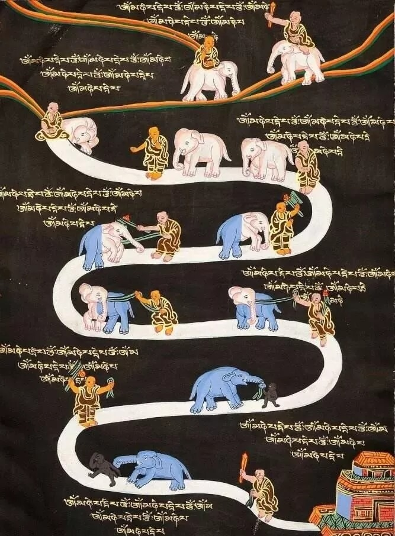
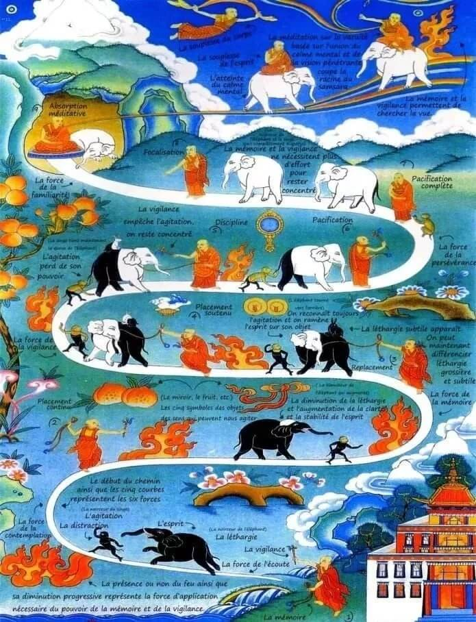

一、定义
什么叫九住心呢？就是降服其心的九个过程。我们修行实际就是修心，修心也就是《金刚经》上讲的“降伏其心”，我们怎么降服自己的心？《瑜伽师地论》讲得比较详细，《瑜伽师地论》是玄奘大师翻译的，一共是一百卷，里边分了十七地，从凡夫到成佛要经过十七个阶段，所以叫十七地。在声闻地就专门讲了九住心。九住心是什么意思？就是九个过程、九个阶段，奢摩他之前是九住心，从奢摩他到三昧又是一个阶段。（具体过程: 九住心——奢摩他——三昧）。

二、图解
出家人：表用功修行的行者，他的钩索表正念，棍表正知，这些是他驯心的工具。
大象：表心，它的黑色表沉没。
猴子：表掉举。
兔：表细微的沉。
在路上，有5种修定的进程上令我们分心的东西（色声香味触觉的外竟，对应眼耳鼻舌身），分别是：
一面镜子，表色和色的诱惑。
一对乐器，表声和其诱惑。
一个装了香水的海螺，表香和其诱惑。
水果，表味和其诱惑。
一块布，表触和其诱惑。
路上有一些火，这些火表四作意。在初修时火比较猛，越往上走，火越小，这指开始修的时候必须用功力度大和很刻意，到后来不必太力度大和很刻意了。
三、九住
1、内住
一般人都习惯将心外放，眼睛看到好看的就一直看，耳朵听到好听的就一直听，舌头尝到好吃的就多吃一点，原本清净的心，透过六根一直向外追求，于是本来清净的心就变成染污心、贪欲心、嗔恨心‥‥‥。习定，即是将散乱心收摄，让心意住在预设的“所缘对象”上，这是习定的第一步，称为“内住”。
行者手拿工具在追象但追不到，这时象被猴拉着跑，二者都为黑色。路上火很猛烈。这是说明在开始的时候，心完全不受控，必须很用力修，而且很用力修也不太见成绩。
2、续住
初习定者，虽然将心收摄于所缘对象，但无始来的虚妄心念，会习惯性的想到平日所做的一些事情，所看的一些景物，此时心就跑到所想的人事物上去。经过一段时间后，若忽而“正知”升起，又把心拉回置于所缘对象，可是一会儿又忘记，又想到别的事情，于是心又再次跑掉，经觉照又再拉回，像这样断续不定的来回于所缘对象，是修定的第二步，称为“续住”。
行者手拿工具在追象但还是追不到，象还是被猴拉着跑，但二者黑色少了一点点。这是说明在第二阶段的时候，心能在很短的时段里停驻在所缘上。
3、安住
此时，心已较习惯安住于所缘对象，妄念一起，即能发觉，并立刻把心拉回，心较安定，不会常常往外跑，这样的心境，称为“安住”。
行者的钩索绑到象了，象已不再被猴拉着跑，但还是跟着猴子。二者黑色又少了一点点，这时兔出现了，但注意看，在这时，象猴兔开始看向和尚了（前2阶段，象是看着追着猴的！）。
这部分图表示在这阶段我们能摄心，心开始有一点点受控了，但一在外界干扰时就心散了。

4、近住
心已能安住于所缘对象，对所观之对象虽然还不是很清晰明显，但只要有一念向外攀缘，便能立刻警觉。随时观照于所缘对象，称为“近住”。
和安住心差不多，但白的程度多了。这是说明在这阶段我们能摄心，但一在外界干扰时仍然心散。
5、调伏
从摄心向内，而至“近住”，皆是把心扣住在所缘对象上；到调顺的阶段，就会知道修定很好，体验到修禅定的殊胜。例如：看书时理解力慢慢增强，办事时精神较能集中，身也有了变化，心也能常处平静当中。所以身心之情绪变化皆能得到具体的改善。降服烦恼的力量也增强了，对于五欲、三毒、男女相之诱惑等，亦能以静制动，不容易为外境所惑。
现在行者不止钩索绑到象，连棍也出动的很好了，而且是行者拉象而猴子乖乖地拉着象尾巴了，象猴兔半白了。此时仍然有兔。这是说明在这阶段我们基本上已对粗的沉掉有控制了，但细微的还有。
6、寂静
上一阶段是克服外境的诱惑，到了这里，是降伏发自内心的杂念。如：曾经看过的录影带、电影、杂志图片、或思念乡里、国家等寻思。五盖──贪欲、嗔恚、惛沉睡眠、掉举恶作、疑。对这些，也能以内心的安定功德克制它了，不易再受它的扰乱。至此，内心是寂静了。寂静，如深夜的寂然无声一般，并非是涅盘的寂静，行者应知！
兔不见了，表细微的沉也受控了，但仍然有细微的掉举。这时象猴的白的程度已过一半了。注意这时火很小了，表示这时候只间歇用力保持定就足够了。
7、最极寂静
上面的寂静，还是以静定来制伏寻、伺等烦恼的，如以石头暂时把草压住，但被压住的草还蠢动着，并非烦恼心念全不现起了。现在已进步到，寻伺等一起，即立刻遣除。前四住心，是安住所缘的过程。但修止成定，主要是为了离欲恶不善法，所以定力一强，从五住到七住，就是降伏烦恼的过程。必静而又净，才能向正定迈进。
注意这时行者不必再用比较粗暴的工具了，只是轻轻地盯着象就足够了，猴子也投降了。这表示在这阶段，粗的沉掉早没了，细的沉也受控了，细微的掉举也几乎没了。
8、一趣
心已安住，不受内外不良因素所动乱，到了平等正直持心的阶段。就此努力使心专注一境，力求自然的、不断的、相续的任运而住。
注意这时和以上都不见有火了，猴子不见了，大象变得很白。这说明在此阶段时，能长期在定中了，心已完全受控。
9、等持。这是专注一趣的更进步，工夫纯熟，不加功用，无作任运自在、自然的相续而住。习定至此阶段，就是要得定了。
四、结尾
修定的方法不同，成就的时间，亦因人而异。但从最初摄心，到成就正定，叙述这一完整的学程，依圣者所说：修止的方便过程，不会超越“九住心”。所以基础定法之养成，应依此修习，要能正确认识自己的进程，才不会生增上慢，而贻误了自己，伤害他人。
习禅的最高目标，固然在转迷成悟，如果一开始便高谈迷悟的问题，除了少数根机深厚明利的人之外，对大多数人而言，是不切实际的。行者坐着修定，象很乖乖地躺在他旁边，驯的不得了。在第九部分的行者的心有彩虹延伸出来，这是说随等持住心后的境界和修持。彩虹路上的飞天和尚表身的轻安，行者骑象表心的轻安。最后，行者骑白象，而且有火和剑，这是表止观双运。这火和下面表四作意的火意思不同，这是指智慧火。剑是表能断轮回的无我智慧正见。